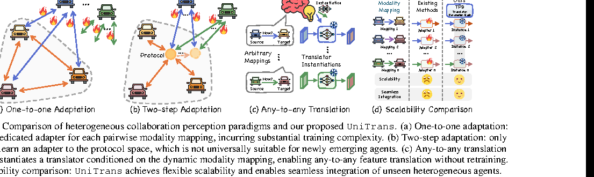
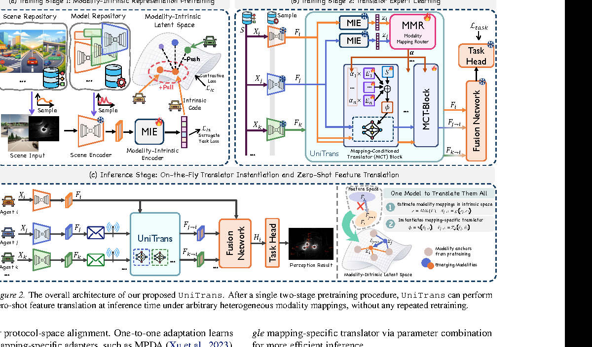

一句话总结
UniTrans 先学习一个 modality-intrinsic latent space 来描述不同中间特征的“模态风格”， 再用 Modality Mapping Router 根据 source-target 关系组合 Translator Parameter Bank， 从而在无需重新训练的情况下完成 zero-shot any-to-any feature translation。
论文要解决的问题
协同感知常用 intermediate fusion：不同车辆或路侧单元共享 BEV intermediate features， 从而缓解遮挡和远距离感知不足。但现实中 agent 的传感器和感知模型很可能不同， 导致中间特征分布不一致，ego 车的 fusion module 直接融合会误读这些特征。
- One-to-one adapter：每个 source-target 模态映射训练一个 adapter，新模态出现会导致组合爆炸。
- Protocol-space 方法：把 feature 先映射到统一协议空间，但协议空间不一定适合未来新模态。
- 跨厂商训练困难：真实部署中频繁联合训练会受隐私、数据和模型封闭限制。
- 核心问题：能否训练一次，推理时对任意新异构 agent 直接生成合适的 feature translator？

创新点怎么理解
Modality-Intrinsic Latent Space
不直接在高维 BEV feature space 中估计映射，而是用 MIE 抽取 scene-invariant、 modality-specific intrinsic code，让新模态可以在低维空间中定位。
Mapping-conditioned Instantiation
MMR 根据 z_source 和 z_target 输出参数组合权重，
让 translator 的实例化由 source-target 模态关系决定。
Translator Parameter Bank
TPB 存储可复用 expert parameters。推理时组合的是参数而不是多个 expert 输出， 因此只需一次 translator forward，比 Classic MoE 更轻。
Zero-shot Any-to-Any Setting
论文把部分 modality 完全留到推理时，测试新 agent 不经额外训练进入协同感知系统的能力。
方法总览

Stage 1:
intermediate feature F -> MIE -> intrinsic code z
same modality pull together, different modalities push apart
Stage 2:
z_j = MIE(F_j), z_i = MIE(F_i)
α_{j→i} = MMR(z_j, z_i)
φ_{j→i} = Θ0 + Σ α_k Θk
F_{j→i} = T_{φ_{j→i}}(F_j)
Inference:
neighbor feature -> UniTrans -> ego-consistent feature
ego feature + translated neighbor features -> Fusion Network -> Task HeadStage 1：MIE 的 Modality-Intrinsic Representation Pretraining
MIE 的目标是从中间特征中抽取“模态风格”而不是具体场景内容。它会使用 channel mean、 channel std、global response 和 Gram matrix / channel correlation 等统计信息， 这些特征类似风格迁移里的 style descriptors，能反映不同传感器和 backbone 的 feature style。
z = MIE(F), z ∈ R^d第一阶段的损失为：
L_stage1 = L_IC + λ_IS L_ISL_IC：Intrinsic Contrastive Loss
对一个 batch 内的 intrinsic codes，和 anchor z_a 同一 modality 的样本是 positive，
不同 modality 的样本是 negative。InfoNCE-style loss 让同模态 code 靠近、异模态 code 远离。
L_IC = Σ_a -log
[Σ_{p∈P(a)} exp(sim(z_a, z_p)/τ)]
/
[Σ_{b≠a} exp(sim(z_a, z_b)/τ)]
图里的 +Pull 和 -Push 就是在表达这个损失：
同一个模态的特征风格聚成 cluster，不同模态形成不同 anchor 区域。
L_IS：Surrogate Modality Classification Loss
L_IS 是辅助模态分类损失。在 intrinsic code 后接一个轻量 MLP 分类头，
直接预测当前 feature 来自哪种 modality：
p_hat(m | z) = softmax(q(z))
L_IS = - E_{(z,m)} log p_hat(m | z)
如果说 L_IC 负责整理 latent space 的几何结构，
那么 L_IS 负责让每个 code 具有清晰的 modality identity。
两者共同保证 MMR 后续能稳定判断 source-target mapping。
Stage 2：Translator Expert Learning
Stage 2 冻结或使用 Stage 1 得到的 MIE，为 source feature 和 target feature 提取 intrinsic code：
z_j = MIE(F_j)
z_i = MIE(F_i)
δ_{j→i} = g(z_j, z_i)
α_{j→i} = softmax(h(δ_{j→i}))
TPB 存储 K 个 translator expert parameters 和一个 shared expert Θ0。
MMR 输出的 α 用于组合这些参数：
φ_{j→i} = Θ0 + Σ_k α_{j→i}^{(k)} Θ^{(k)}
F_{j→i} = T_{φ_{j→i}}(F_j)这和普通 MoE 的差异很关键：普通 MoE 通常执行多个专家再融合输出； UniTrans 是先组合专家参数生成一个 translator，再只执行一次 forward。
训练包含下游 task loss、feature distillation loss、routing contrastive loss 和 router regularization。
其中 L_feat 让翻译后的 feature 接近 ego encoder 对同一 observation 产生的 teacher ego-domain feature，
是消融中最关键的 Stage 2 监督。
Inference：On-the-fly Translator Instantiation
推理时，新异构 agent 的 feature 经过 MIE 得到 intrinsic code；MMR 根据它与 ego code 的关系输出参数组合权重； TPB 被组合成当前映射专用 translator。整个过程不需要重新训练。
Agent j sends F_j
ego has F_i
UniTrans estimates j→i mapping
instantiate T_{φ_{j→i}}
translate F_j into F_{j→i}
fusion: F_i + F_{j→i} + ... -> perception result实验结果
论文在 OPV2V-H 和 DAIR-V2X 上评估 cooperative 3D object detection。
作者构造 30 种 modality，并把 m7, m13, m17, m25, m27, m30 留作 inference-time emerging modalities。
Any-to-any translation on OPV2V-H
| Method | Avg. AP@0.5 | Avg. AP@0.7 |
|---|---|---|
| MPDA | 0.622 | 0.508 |
| PnPDA | 0.637 | 0.524 |
| PolyInter | 0.644 | 0.539 |
| STAMP | 0.653 | 0.527 |
| NegoCollab | 0.662 | 0.538 |
| Classic MoE | 0.653 | 0.544 |
| UniTrans | 0.716 | 0.605 |
Any-to-any translation on DAIR-V2X
| Method | Avg. AP@0.5 | Avg. AP@0.7 |
|---|---|---|
| MPDA | 0.489 | 0.374 |
| PnPDA | 0.508 | 0.385 |
| PolyInter | 0.486 | 0.373 |
| STAMP | 0.503 | 0.384 |
| NegoCollab | 0.509 | 0.389 |
| Classic MoE | 0.523 | 0.388 |
| UniTrans | 0.553 | 0.421 |
效率对比
| Method | GFLOPs | CPU ms | CUDA ms |
|---|---|---|---|
| MPDA | 124.6 | 11.852 | 46.814 |
| Classic MoE | 245.5 | 89.078 | 141.352 |
| UniTrans | 109.3 | 6.865 | 53.760 |
消融实验
| ID | L_IC | L_IS | L_task | L_feat | L_ctr | L_r | AP@0.5 | AP@0.7 |
|---|---|---|---|---|---|---|---|---|
| 0 | ✓ | ✓ | ✓ | ✓ | ✓ | ✓ | 0.716 | 0.605 |
| 1 | × | ✓ | ✓ | ✓ | ✓ | ✓ | 0.685 | 0.575 |
| 2 | ✓ | × | ✓ | ✓ | ✓ | ✓ | 0.694 | 0.583 |
| 3 | × | × | ✓ | ✓ | ✓ | ✓ | 0.662 | 0.540 |
| 4 | ✓ | ✓ | × | ✓ | ✓ | ✓ | 0.691 | 0.579 |
| 5 | ✓ | ✓ | ✓ | × | ✓ | ✓ | 0.653 | 0.531 |
| 6 | ✓ | ✓ | ✓ | ✓ | × | ✓ | 0.688 | 0.576 |
| 7 | ✓ | ✓ | ✓ | ✓ | ✓ | × | 0.708 | 0.598 |
L_IC 和 L_IS 分别去掉都会下降，两个都去掉退化到 0.662/0.540。
去掉 L_feat 降幅最大，说明 feature distillation 是翻译质量的强监督。
你问过的问题与当前理解
Figure 2 怎么看？
Figure 2 是三段式：左上训练 MIE，右上训练 translator experts，下方推理时对新异构 agent 做现场 translator 实例化。 第一阶段回答“你是什么风格的 feature”，第二阶段回答“从你的风格到 ego 风格应该怎么翻译”，推理阶段不再重新训练。
MIE 第一阶段两个损失分别干什么？
L_IC 是对比学习，负责同模态拉近、异模态推远，让 latent space 有结构；
L_IS 是辅助模态分类，负责让 intrinsic code 具有清楚的 modality identity。
一句话：L_IC 学空间结构，L_IS 学模态身份。
它和普通 MoE 有什么不同？
普通 MoE 常常执行多个 expert 并融合输出；UniTrans 根据 mapping 先组合 expert parameters， 实例化一个 translator 后只 forward 一次，所以更适合车端实时协同感知。
对你研究思路的启发
这篇虽然不是 world model planning，但它提供了一种很漂亮的范式： 先学习 intrinsic relation space，再用 router 将关系转化为可执行模块。
feature → modality intrinsic code → mapping router → translator parameters。
future scene → planning factor code → factor gate/router → planner adapter/refiner。
gate 不一定只做 feature 加权，也可以做 parameter conditioning。
学习 planning-factor intrinsic space，并根据 factor-context relation 动态实例化 planner。
局限与疑问
- 任务仍是感知：指标是 cooperative 3D detection AP，不证明规划安全性。
- zero-shot 依赖训练覆盖：训练阶段见过 24 个 modality，泛化能力依赖模态库足够丰富。
- MIE 是否真正 scene-invariant 仍需更多分析：统计特征可能仍受场景内容影响。
- L_feat 依赖 paired teacher feature：现实跨厂商部署不一定容易得到同一 observation 的 ego-domain teacher。
- baseline 设置需谨慎解读：很多 prior methods 原本不是为 zero-shot any-to-any 设计的。